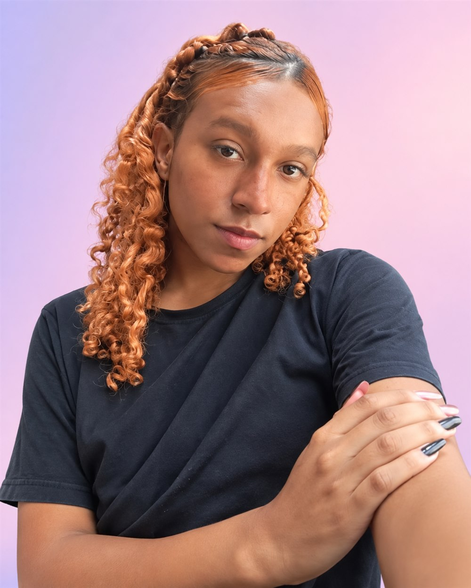
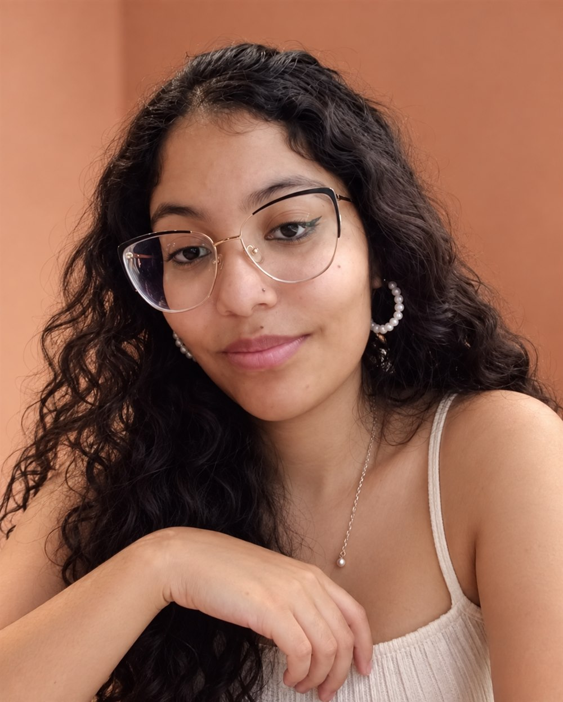

Psicologia · Marketing humanizado
Andy
Games · Música · Conexões
Sou apaixonada por entender pessoas e transformar realidades. Música e games fazem parte das histórias que me inspiram.
Guia rápido para conquistar oportunidades
“Você não precisa ter tudo decidido agora. Só precisa dar o próximo passo.”
Um guia rápido para ajudar você a se preparar para oportunidades de trabalho e novas possibilidades para o futuro.
Criamos este espaço para compartilhar informação, acolhimento e caminhos possíveis para o seu próximo passo.

Games · Música · Conexões
Sou apaixonada por entender pessoas e transformar realidades. Música e games fazem parte das histórias que me inspiram.

Cultura pop · Livros · Música
Gosto de animes, desenhos, filmes, jogos, livros e praia. As histórias e os sentimentos que conectam as pessoas sempre me inspiram.
Qual é o seu objetivo atual? Escolha o que mais combina com o momento que você está vivendo.
Uma direção de cada vez
Ter uma direção ajuda você a enxergar oportunidades com mais facilidade!
Você não precisa ter todas as respostas para começar.
Um currículo claro ajuda a pessoa recrutadora — e os sistemas de seleção — a entender o que você já sabe fazer.
0 de 6 itens conferidos
Dica rápida — sistemas ATS
Adapte seu currículo para cada vaga. Se pedem “Atendimento ao Cliente”, use essa expressão exata se ela descreve algo que você já fez ou sabe fazer.
Não tem experiência?
Projetos escolares, voluntariado, grêmio estudantil, monitoria e trabalho comunitário também contam. Conte o que você fez e o que aprendeu.
ATS é um sistema que organiza currículos recebidos. Prefira títulos claros e palavras que aparecem na descrição da vaga.
O “Instagram profissional”: um lugar para apresentar seus interesses, sua formação e o que quer aprender.
0 de 5 itens conferidos
Seu LinkedIn não precisa estar 100% completo para ser criado. Comece hoje mesmo e atualize seu perfil conforme novas experiências aparecerem.
Quero começar meu LinkedInO link abre o LinkedIn em outra aba.
Toque nas perguntas para ver um jeito simples de começar sua resposta. Não precisa decorar: pense em exemplos reais.
Conte um pouco sobre o que estuda, algo que gosta de fazer e uma habilidade que quer desenvolver. Uma resposta curta já pode mostrar quem você é.
Relacione o que chamou sua atenção na vaga com algo que você quer aprender ou contribuir. Pesquisar a empresa antes ajuda.
Escolha uma qualidade e dê um exemplo. Pode ser organização em um trabalho escolar, colaboração em equipe ou responsabilidade com horários.
Fale do seu interesse, da sua disposição para aprender e de uma habilidade ou experiência que combine com o que a vaga pede.
Lembrete
Seja você mesmo. Mostre o seu potencial!
Pequenos cuidados podem deixar sua candidatura mais tranquila e completa.
0 de 4 itens conferidos
Pequenos detalhes fazem grande diferença.
Todo profissional começou sem experiência um dia.
Você não precisa estar pronto para começar. Precisa começar para evoluir.
O que eu posso fazer esta semana para me aproximar do futuro que quero?
Essa resposta é sua. Não precisa preencher nem compartilhar com ninguém.
Comece pequeno. Aprenda. Tente. Erre. Continue.
Voltar ao início